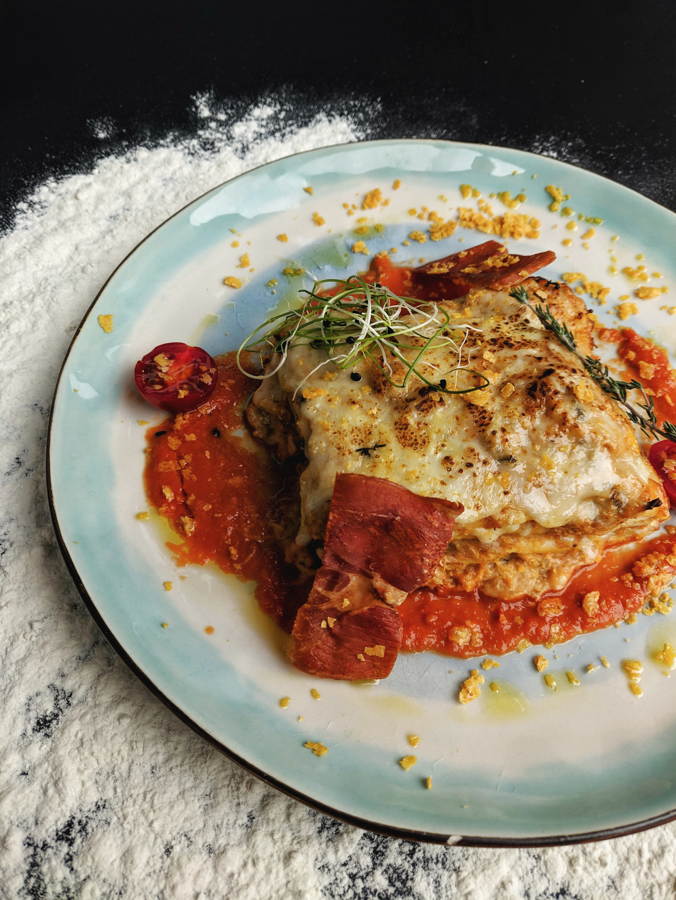

Lasagna Recipe
Home

This is a traditional dish in a Mexican family. It is composed of traditional Mexican ingredients layered over the top of one another in a lasagna-like fashion (hence the name) but has little similiarity to lasagna, so lasagna haters have no fear!
Ingredients
- 1.5 pounds of ground beef
- 1/4 cup water
- 1 oz. packet of taco seasoning mix
- 12 (8 inch) flour tortillas, or more if needed
- 1 (14 ounce) can refried beans
- 3 cups shredded Colby-Jack cheese
- 1 (8 ounce) jar taco sauce
- 1 cup shredded cheese
Directions
- Preheat oven to 350 degrees F. Grease a 9x13 inch casserole dish.
- Heat a large skillet over medium-high heat and stir in ground beef. Cook and stir until beef is crumbly, evenly browned, and no longer pink, about 10 minutes. Drain and discard any excess grease. Add water and taco seasoning; cook and stir until mixture has thickened, 5 to 10 minutes.
- Heat a large skillet over medium-high heat and stir in ground beef. Cook and stir until beef is crumbly, evenly browned, and no longer pink, about 10 minutes. Drain and discard any excess grease. Add water and taco seasoning; cook and stir until mixture has thickened, 5 to 10 minutes.
- Bake in the preheated oven until top tortilla layer begins to brown, 20 to 25 minutes. Sprinkle 1 cup Colby-Jack cheese over lasagna.
- Turn on oven's broiler
- Place lasagna under the broiler until Colby-Jack cheese is melted and bubbling, 3 to 5 minutes.